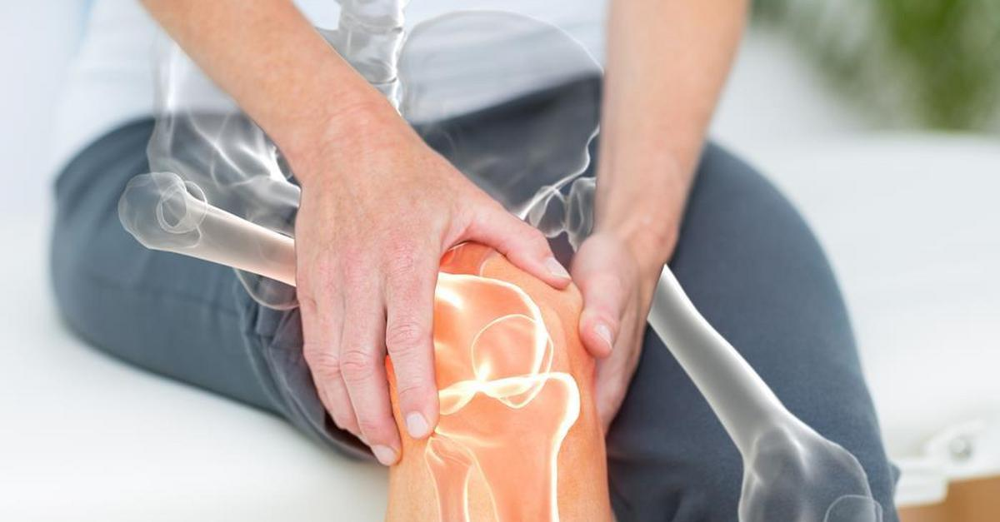
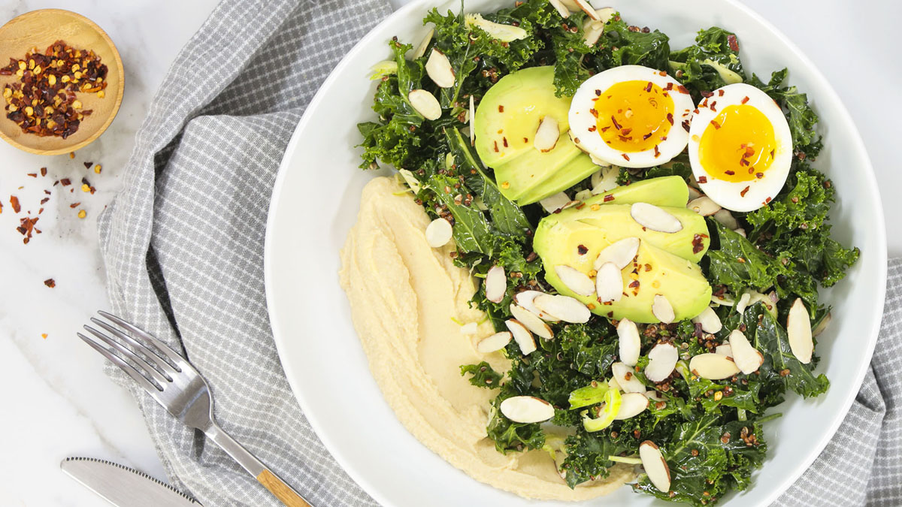
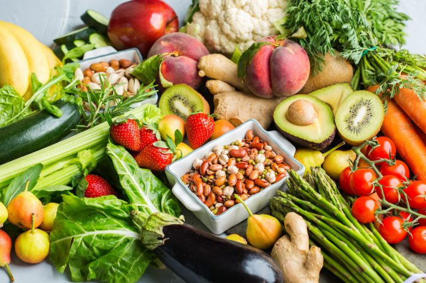

Ogólne podsumowanie
Nieprawidłowe odżywianie podczas stosowania diety wegetariańskiej, jest przyczyną wielu niedoborów, co w konsekwencji może prowadzić do poważnych chorób. Jakie są możliwe wady tego sposobu żywienia?
- opóźniony rozwój psychomotoryczny
- niedożywienie białkowe
- krzywica
- niedobór witamin, w szczególności z grupy B.
Należy jednak pamiętać, że wymienione powyżej skutki stosowania diety wegetariańskiej występują tylko w przypadku, gdy jest ona nieprawidłowo skomponowana. Jeśli nasza dieta jest odpowiednio zbilansowana i dostarcza nam odpowiedniej puli energii, to nie mamy się o co martwić :)

- otyłości
- cukrzycy typu 2.
- choroby niedokrwiennej serca
- nadciśnienia tętniczego
- nowotworów
- kamicy żółciowej i nerkowej
- zaparć i hemoroidów
- próchnicy zębów.
Przejście na dietę wegetariańską może być bardzo prostym i przyjemnym sposobem na zdrowe odchudzanie. Przede wszystkim dlatego, że wykluczenie mięsa i jego przetworów eliminuje z diety całkiem sporo przetworzonego jedzenia. Decydując się na wegetarianizm, wybieramy bowiem przede wszystkim produkty świeże – warzywa i owoce oraz zboża.

Rezygnacja z potraw mięsnych niesie bowiem za sobą ryzyko poważnych braków w diecie. Obecnie nauka dostarcza jednak coraz większej ilości dowodów, że dieta wegetariańska wcale nie musi prowadzić do niedoborów witamin i składników odżywczych. Kluczem jest tutaj odpowiedni dobór składników, by dostarczały takich samych związków, w jakie obfitują potrawy mięsne. W szczególności należy zadbać o podaż:
- białka - jest ono podstawowym budulcem organizmu i nie może go zabraknąć w żadnej diecie
- żelaza - odpowiedni jego poziom daje gwarancję dobrego samopoczucia
- wapnia - odpowiedzialny jest głównie za wzrost i mocne kości
- witaminy B12 - jest ona kluczowym elementem w procesie tworzenia białych, czerwonych krwinek i trombocytów oraz w syntezie białek i metabolizmie węglowodanów i tłuszczów.
